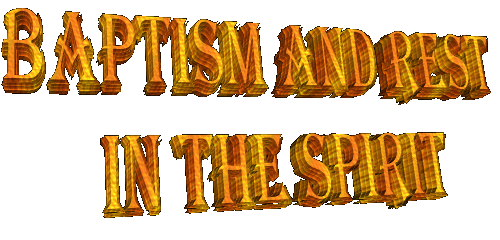

 Baptism in the SPIRIT,
signifies to receive an infusion of graces of the HOLY SPIRIT, equal how JESUS
spilled on the Disciples and them, with the same authority, it infused on the presbyter
and on every Christian Community. Then, to be baptized in the SPIRIT, it is to stay
"full"
with the Gifts of
the Advocate PARACLETE.
Baptism in the SPIRIT,
signifies to receive an infusion of graces of the HOLY SPIRIT, equal how JESUS
spilled on the Disciples and them, with the same authority, it infused on the presbyter
and on every Christian Community. Then, to be baptized in the SPIRIT, it is to stay
"full"
with the Gifts of
the Advocate PARACLETE.
�And when they had arrived, they prayed for them, so that they might receive the HOLY
SPIRIT. For he had not yet come to any among them, since they were only baptized in the
name of the LORD JESUS. Then they laid their hands on them, and they received the
HOLY SPIRIT�.
(Acts 8, 15-17)
This way, in the
charismatic meetings when it is spoken in "Baptizing in the SPIRIT", what happens in fact it is
a devoted prayer of stimulate with the objective of motivating the HOLY SPIRIT
which already meets inside each person, at to operate of a special way
by means of some charisma, in profit of a collectivity and for larger glory of the
LORD. It is not a new sacrament and the name "Baptism" is inappropriate, because in fact it wants to mean
"the awakening of the
gifts� that the people
received in the Baptism and in the Sacrament of the Confirmation.
Excepting the case of the Baptism of Adults, when the people make a Preparatory Course with objective of to know and to understand the usefulness and value of
Sacrament, in a general way the Baptism is given to children in the age group of
one month at two years of age. The children also receive the Confirmation
Sacrament among 8 at 12 years of age. In consequence, they don't possess the
necessary understanding about the value and usefulness of the Baptism Sacrament
and of the Confirmation for your life. The parents and godfathers are who assume
before GOD and of the Church, the responsibility of transmitting the children
along the years in union with the parochial catechesis, the value of the
Sacraments. So, the children will receive teachings, duties and obligations
originating from the sacraments, as well as its advantages and the whole profit
that they provide to its existence. However, this doesn't almost always happen
motivated by a variety of circumstances, because many parents if forget of the
children and thus, the child grows up ignoring the greatness of the charismas
that possesses guarded in its heart.
Course with objective of to know and to understand the usefulness and value of
Sacrament, in a general way the Baptism is given to children in the age group of
one month at two years of age. The children also receive the Confirmation
Sacrament among 8 at 12 years of age. In consequence, they don't possess the
necessary understanding about the value and usefulness of the Baptism Sacrament
and of the Confirmation for your life. The parents and godfathers are who assume
before GOD and of the Church, the responsibility of transmitting the children
along the years in union with the parochial catechesis, the value of the
Sacraments. So, the children will receive teachings, duties and obligations
originating from the sacraments, as well as its advantages and the whole profit
that they provide to its existence. However, this doesn't almost always happen
motivated by a variety of circumstances, because many parents if forget of the
children and thus, the child grows up ignoring the greatness of the charismas
that possesses guarded in its heart.
But evidently, it should not be like this. The Christians should have the concern of to know
the value of the sacraments and to wake up the charismas that are stored in its spirit,
for your own happiness.
In the Catholic Charismatic Renewal, the awakening of the charismas is
denominated
"Baptism in the SPIRIT".
Nevertheless, it should not there to be confusion: only exists a HOLY SPIRIT in
which we were baptized, as Saint Paul said:
�And indeed, in one SPIRIT, we were all baptized into one body
(Mystic Body of the
Church),
whether Jews or Gentiles, whether servant or free. And we have all drank in the
one SPIRIT�.
(1 Corinthians 12, 13)
"... One LORD, one faith, one baptism," (Ephesians 4, 5)
Then, only there is one
Baptism that is the Sacrament which we receive and that it transforms us in members of
CHRIST'S Church. And also only exist one Niceno-Constantinopolitan Creed (was
proclaimed in the Councils of Nicaea and Constantinople) that all faithful should profess.
For these reasons, it is advisable instead of adopting the expression:
"Baptism in the
SPIRIT", to say
"to beg to the
HOLY SPIRIT to wake up the charismas that HIM same it placed in our heart".
"REST IN THE SPIRIT"
This is the experience
of falling in the ground of backs, during the prayer of one or more people, in a
charismatic meeting.
It is considered by many as being a charisma of the SPIRIT and to other, as being just
part of the Gift. This because the event in itself has two parts: "fall"
and "rest"
. Some person they affirm
that only "the
rest" constitutes
the charisma, while
"the fall�,
can be influenced by a hypnotic state or personal suggestion, that aren�t necessarily
related with the action of the HOLY SPIRIT.
The fact happens in the following way: the person that possesses the charisma, imposing
the hands, pray on the faithful, but without touching in him, or touching it slightly, in such
manner that the person which receives the prayer, when it feel the force of the prayer
falls at the ground, always aided by assistants that accompany the phenomenon. Lied down
in the ground, the creature that received the grace has a spiritual experience of notable
value, that naturally it isn�t the same in a group of people, but without a doubt, it produces
an effect highly positive in the life of each one of them.
The phenomenon is also known by the expressions: "Was Dominated in the SPIRIT"
, �To Fall under the
Power�,
"Sleeping�
,
"To Die in the
SPIRIT"
or simply with the name "The Blessing".
A TESTIMONY:
Gustavo was a strong
and very proud gaucho, supervisor of an automobile firm in Saint Paul city and he liked
of to exhibit your
"professional status". However, as all the people, also he had problems and difficulties which tried
to solve them for his own peacefulness.
With this objectify, he were frequenting charismatic meetings in Saint Paul in
1986, but he didn't want if to submit at the Rest in the SPIRIT, he stayed
embarrassed and said: "I, supervisor Gustavo to lie down in the ground in the middle of that
group, with my clothing of tropical English, doesn't it give, OK? I am a male, and
a macho doesn't crawl and nor want to lie down in the ground how a worm. The
only person that can knock down a male, is other male, doesn't it agree?�
In the sequence of the weeks, always wanting to get help to overcome his problems,
after the tiresome insistence of friends and relatives, he decided that in the following
meeting he if would submit at the rest in the SPIRIT.
And of fact he adhered to yours vows. On the Friday, month of April, when he entered
in the parochial living room with your wife, priest Edward came at the encounter and
asked him:
�Do you want to be baptized in the SPIRIT"? "Yes, I want", Gustavo answered. There has been a not time for anything!
Like him same said that only another male would knock down a true male, the HOLY
SPIRIT without any resentment showed to be a super-male. Badly the prayer had begun,
in few seconds threw him at the ground with his "status" and all his vanity.
Then, particularly he told me: "When I noticed which was in the ground, nor I have stayed worried with my
clothes and nor with my male pride, I was in the arms of JESUS and HE has cured affectionately
all the wounds of my soul. I feel that my life if transformed and I see with joy, that today
I am another person".
The HOLY SPIRIT only acts when HE is invited and stimulated to exercise HIS
powers, and HE proceeds like this, because, above all, HE is the own LOVE, the
precious source of the life, that don't force anybody to do what doesn't want.

Next Page

 Previous Page
Previous Page
Comes Back to the Index